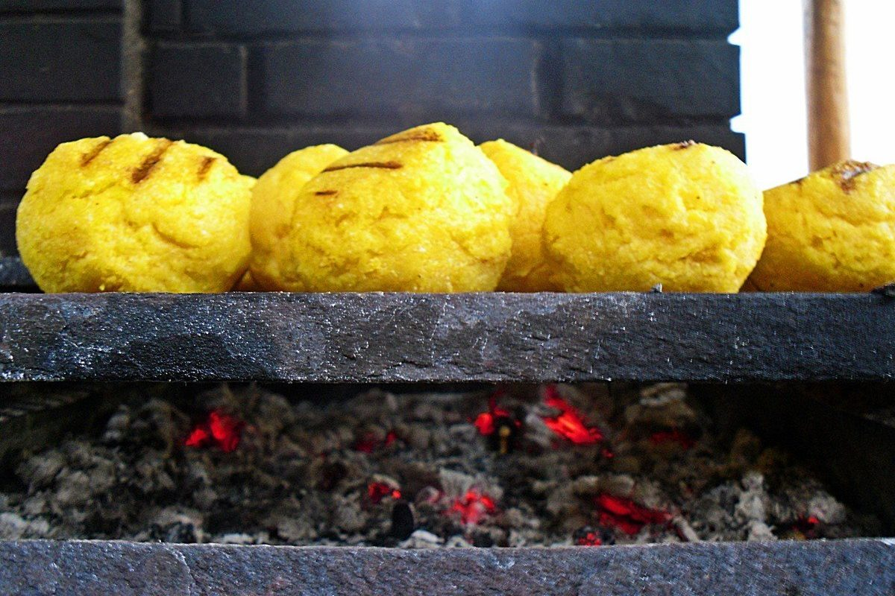
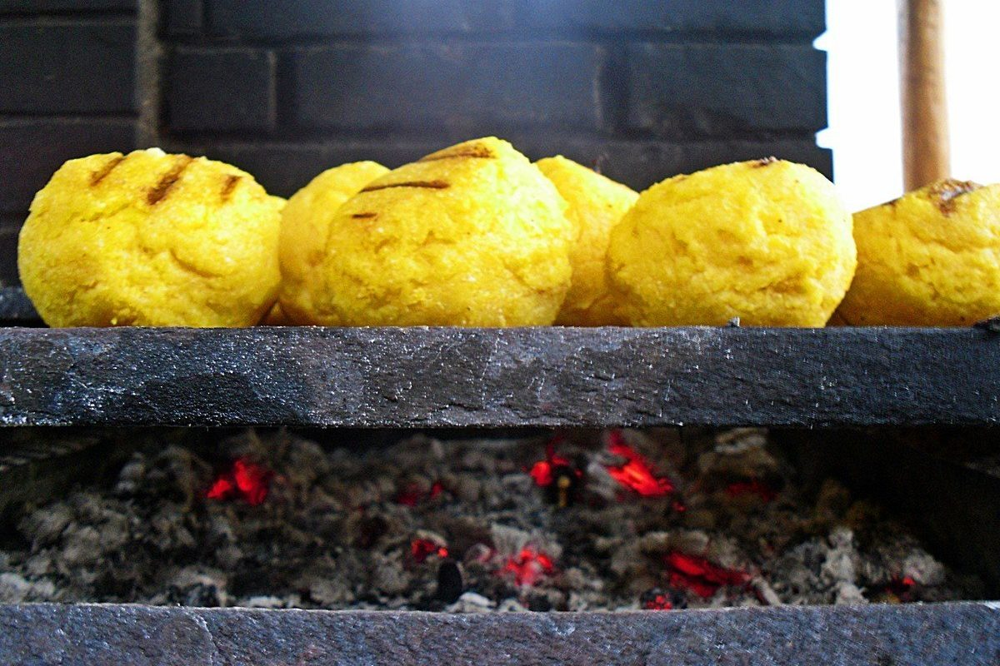

Unt de usturoi - Retete culinare - Romanesti si din Bucataria internationala
2021.03.24 11:28

Salate Paste si pizza Carte de bucate Aperitive Bauturi si cocktailuri Carne si fripturi Sosuri Peste Deserturi Tocanita Conserve Garnituri Retete cu legume Trucuri culinare Ciorbe si supe Bucataria italiana Retete de post Retete speciale Retete de sarbatoare Mucenici Retete de Paste Retete de Craciun Retete de Revelion Retete romanesti Retete traditionale Retete din Ardeal Retete din Bucovina Retete din Dobrogea Retete din Moldova Retete din Banat Retete din Oltenia Retete din Muntenia Bucatarie internationala Bucataria spaniola Bucataria greceasca Bucataria chinezeasca Bucataria japoneza Bucataria mediteraneana Bucataria orientala Bucataria frantuzeasca Bucataria indiana Bucataria mexicana Bucataria turceasca Retetele Tale Articole Retete Carte de bucate Sosuri Albe Unt de usturoi
Unt de usturoi
De erikachivu, Sâmbătă, 27 ianuarie 2018, 12:11
Timpi de preparare
Timp de gatire: 5 min Gata in: 5 minIngrediente
250 g unt 1 capa âna mare de usturoi 1 ceapa mica 1/2 lingurita ulei 1 legatura patrunjel piperMod De Preparare
Unt de usturoi ideal pe pâine prăjită fierbinte și crocantă și pe fripturi sfârâinde și aromate. Cel mai bun unt de usturoi este cel făcut chiar de mâinile tale, după rețeta simplă de aici.
Metodă de preparare:
1. Se lasa untul sa se înmoaie la temperatura camerei, iar usturoiul se curaţa, se taie pe din doua si se scoate germenele de la mijloc.
2. Apoi, usturoiul se pune într-o strecuratoare de metal care se asaza pe o oala cu apa pe aragaz. Se lasa 5 minute din momentul în care fierbe apa si apoi se dau deoparte.
3. În robotul mixerului se pune untul moale si taiat cubuleţe, se adauga ceapa, usturoiul si piperul. Se mixeaza întâi o tura-doua si apoi se adauga uleiul care ajuta la mixare.
4. Se pune si patrunjelul si se mixeaza pentru a obţine o pasta fina. Se pune în borcan si se pastreaza la frigider 24 de ore sau la congelator pentru mai mult timp.
Rețete la care îl poți folosi cu încredere ca și condiment:
Chifle de casă
Cotlet de miel la cuptor
Costiţe de porc la grătar
Evaluează Alte rețete Paste cremoase cu ciuperci Citește mai multe Maioneză de casă, în 3 minute Citește mai multe Penne cu pui Alfredo Citește mai multe Pui Piccata Citește mai multe Paste quatro formaggi Citește mai multe Gnocchi în sos Alfredo Citește mai multe Piept de pui cu broccoli în sos Alfredo Citește mai multe Piept de pui cu sos gorgonzola Citește mai multe Spaghete Carbonara rețeta autentică Citește mai multe Chiftele în sos de brânzeturi Citește mai multe Salată cremoasă de cartofi Citește mai multe Cartofi Dauphinoise Citește mai multe Tortellini cu spanac și ricotta în sos alb Citește mai multe Sos Alfredo Citește mai multe Cartofi carbonara Citește mai multe Sos bearnaise Citește mai multe Sos olandez/hollandaise Citește mai multe Macaroane cu brânză varianta vegană Citește mai multe Muschi de vita cu sos alb Citește mai multe Pui cu sos alb Citește mai multe retete retete ieftine retete rapide retete simple unt Twitter Facebook Google+ Vezi şiCum se face Tzatziki rețeta autentică grecească
mai multAioli cel mai bun sos de usturoi
mai multSos bechamel
mai multCannelloni cu carne de vită și sos bechamel
mai multSpaghete carbonara de post/vegane
mai multCea mai bună salată de cartofi din lume
mai mult Redactia.ro În ziua nunții, amanta mirelui și-a făcut apariția în timpul ceremoniei acestuia, iar modul în care era îmbrăcată a șocat toți invitații: „Pentru asta ai plecat dimineaţă de la mine?" S-a apucat să-și renoveze casa și la un moment dat a găsit un borcan în perete. Cand l-a deschis, A INCREMENIT. Un bilet vechi de 82 ani avea să-i schimbe viața De ce s-a căsătorit o tânără cu acest bărbat: Poate că nu e foarte înalt, dar e… Cum făceau amor femeile din URSS. Practica interzisă care le-a făcut celebre pe rusoaice ziareonline.ro Menajera care făcea curat acasă la Oana Roman, ȘOCATĂ de ce a găsit într-unul din sertare. Ce obiecte folosea vedeta cu fostul ei soț: Raluca Bădulescu este văzută numai cu perucă! Dar să vezi cum arată când renunță la ea! Acum se vede foarte clar de ce poartă peruci. Cum arată părul ei natural Cu câți bărbați s-a iubit Andra înainte să se căsătorească cu Măruță. Nu o să-ți vină să crezi numarul… Înainte de nuntă, mirele a aflat că mireasa l-a ÎNȘELAT. S-a RAZBUNAT în văzul tuturor: “I-am rugat pe toți să ridice farfuriile și…” Proiecte speciale Castiga cu UNICA si CeraVe un set complet pentru ingrijirea pielii Ce supereroină ești? Fă testul și află cu ce personaj feminin din serialele de pe HBO GO semeni. Te așteaptă super premii. Povestea impresionantă a unei tinere care a crescut în orfelinat. Cum este privită de societate, după ce a ieșit din sistem: „Multă lume nu înțelege că și noi avem drepturi” Un nou laborator se alătură eforturilor de testare RT-PCR la nivel național Unica.ro PRIMA POZĂ cu fetița. Mămica Gina Pistol e în culmea fericirii! ”Mă topesc de dragul ei” Oana Roman, dezvăluire neașteptată, de natură personală, despre tatăl ei. 'Este absolut obsedat...' Anul trecut s-au căsătorit civil, iar anul acesta toată lumea se aștepta la nuntă, dar NU o să se mai întâmple Prinsă cu minciuna! Meghan Markle, dată de gol de preoții Bisericii Anglicane HUFF.ro Ministrul Educației a făcut anunțul momentului! Vacanța de primăvară se prelungește Carantină în alte două mari orașe! Anunț de ULTIMA ORĂ Ministrul Educației tocmai a făcut anunțul. Toți elevii sunt vizați Dan Capatos pe pe făraș! Antena 1 a luat decizia „Din păcate dispare de pe post” ELLE Adevărul a ieșit la iveală! Ce a simțit Regina Elisabeta la moartea Prințesei Diana. O scrisoare a Reginei a fost acum dezvăluită lumii Este PRIMA IMAGINE cu fetița celebrului cuplu. Milioane de oameni i-au felicitat pe părinții micuței Mădălina Ghenea, surprinsă alături de un actor de legendă pe străzile din Milano! Românca a atras toate privirile Motivul pentru care Cristina Ich nu vrea să se căsătorească. Ea și Alex Pițurcă au un băiețel, pe nume Noah Alexandru Avantaje.ro Prințul Harry s-a angajat! Ce job are Ducele de Sussex? Cea mai bună prăjitură de post: Negresă cu nuci și cafea Ce se întâmplă cu Radu Palaniță la un an după ce a câștigat „Românii au talent”. „Trec printr-o perioadă dificilă” Cum alegi un vin bun? Sfaturi de la un expert somelier Sfatul Medicului Care sunt bolile la care esti predispus in functie de grupa ta de sange? 7 motive intemeiate sa mananci cate un mar in fiecare zi Localizarea durerilor de cap, simptom al unor boli ascunse Efectele secundare ale vaccinurilor anti-COVID-19. Ce trebuie sa cunosti si de ce nu trebuie sa ne ingrijoram? Faxnews Dan Capatos pe pe făraș! Antena 1 a luat decizia „Din păcate dispare de pe post” Mariana Cojocaru adusă la sapă de lemn, fostul soț i-a lua toți banii Mirela Vaida: Nu mă așteptam ca ai mei copii să facă asta Cum se câștigă la loto? Care este secretul la toate jocurile Trending news Buna Vestire - sărbătoare mare pe 25 martie în calendar ortodox 2021 Vacanța de primăvară 2021 ar putea dura o luna. Anunț important despre vacanța de Paște Subiecte Simulare BAC 2021. Proba la alegere a profilului Ora de vară 2021. Când dăm ceasul cu o oră înainte Cele mai populare rețete Bors, ciorbe si supe Ciorbă rădăuțeană rețetă ușor de pregătit Bors, ciorbe si supe Ciorbă de perişoare rețeta autentică Creme Cremă de zahăr ars Deserturi Tiramisu pas cu pas Bors, ciorbe si supe Ciorbă de burtă cu smântână Pasta Paste Carbonara Deserturi Cheesecake foarte simplu Biscuiti Salam de biscuiţi Carte de bucate Plăcintă cu mere rețeta tradițională Carte de bucate Pancakes (clătite americane) Bucatarie internationala Papanaşi prăjiţi, cu dulceaţă şi smântână Retete de Paste Pască fără aluat după rețeta lui Teo Trandafir Carte de bucate Prajitura Alba ca Zapada Aperitive Pâine de casă Carte de bucate Cartofi la cuptor cu ierburi aromate Carne si fripturi Sarmale în foi de varză murată Carte de bucate Varză călită de post Deserturi Lava cake Carte de bucate Gogoşi pufoase Miel Drob de miel Cele mai noi rețete culinare Cum se prepară seitan carnea vegetariană mai mult Cum se face Tzatziki rețeta autentică grecească mai mult Blondie negresa blondă mai mult Karidopita prăjitură cu nucă grecească mai mult Alevropita plăcintă grecească rapidă cu brânză feta mai mult Supă cremă de dovlecei zucchini mai mult Cum se fac cele mai rapide chifle mai mult Cheesecake cu nutella rețeta fără coacere mai mult Supă grecească de ied din doar 5 ingrediente mai mult Fasolatha supă de fasole grecească mai mult Trucuri culinareFursecuri cu textură perfectă? Da, simplu: răcește aluatul înainte să îl coci (o oră e în regulă, peste noapte e perfect) și lovește ușor tava de cuptor când o scoți, ca să eviți lipirea fursecurilor de ea.
Atunci când e necesar să adaugi apa în mâncare este indicat să foloseşti apă fierbinte
Toate trucurile Trimite un truc Rețete de salate Salată de ardei iute cu ceapă mai mult Salată cu pui şi rucola mai mult Lalele din roșii umplute cu brânză și castraveți mai mult Salată de castraveți cu smântână mai mult Salata „Hidratantă” mai mult Trimite un truc culinar Adauga reteta Termeni si conditii Despre cookies Politica de confidențialitate Despre Unica Echipa Unica Sitemap Contact Modifică SetărileRetete culinare Romanesti si din Bucataria internationala
© Ringier Romania, 2021
All rights reserved
Retete de colectie Salate Paste si pizza Carte de bucate Aperitive Bauturi si cocktailuri Carne si fripturi Sosuri Peste Deserturi Tocanita Conserve Garnituri Retete cu legume Trucuri culinare Ciorbe si supe Bucataria italiana Retete de post Retete speciale Retete de sarbatoare Mucenici Retete de Paste Retete de Craciun Retete de Revelion Retete romanesti Retete traditionale Retete din Ardeal Retete din Bucovina Retete din Dobrogea Retete din Moldova Retete din Banat Retete din Oltenia Retete din Muntenia Bucatarie internationala Bucataria spaniola Bucataria greceasca Bucataria chinezeasca Bucataria japoneza Bucataria mediteraneana Bucataria orientala Bucataria frantuzeasca Bucataria indiana Bucataria mexicana Bucataria turceasca Retetele Tale Articole- Perdele scurte Bucatarie - eMAG.ro
- Convertor unitati masura Bucatarie | Untdelemn de la Bunica
- Cu Medi in bucatarie
- Perdele | FAVI.ro
- Poze : pâine, bagheta, cină, alimente, carbohidrați, unt ...
- Cum se face GHEE | Bucatarie Indiana Vegetariana
- Crumble cu mere - retete de prajituri - Retete Practice
- Malay Roti – Lipii fine si moi cu Unt | Bucatarie Indiana ...
- Reţetă Fursecuri fragede cu unt - Arome în bucătărie
- Perdele bucătărie | FAVI.ro
- Perdele scurte Bucatarie - eMAG.ro
150 g unt la temperatura camerei. 100 g zahar pudra. 6 oua . 150 g ciocolata amaruie. 1 lingura cacao. 2 pliculețe zahar vanilat. 75 g zahar tos. 150 g faina. o priza sare. Mai avem nevoie. unt pentru uns tava
- Convertor unitati masura Bucatarie | Untdelemn de la Bunica
100 gr unt moale, la temperatura camerei 3-4 linguri lapte rece 1 lingurita sare aprox 150 ml apa. 1 cana = 350 ml. METODA Faceti un aluat fin si moale din fainuri + sare + lapte + 2 linguri unt moale (nu topit !) + apa. Turnati apa cate putin, nu toata deodata. Cantitatea de apa folosita depinde mult de tipul de faina pe care il aveti.
- Cu Medi in bucatarie
o lingură de unt; sare, piper; Mod de preparare dorada la cuptor cu sparanghel tras în unt. Peştele se curăţă de măruntaie (asta dacă nu aveţi noroc să luaţi peşte eviscerat) şi solzi, se spală şi se şterge uşor cu un prosop de hârtie. Se crestează peştii pe ambele părţi (4-5 tăieturi sunt suficiente).
- Perdele | FAVI.ro
Sare O linguriţă rasă = 10 g Făină O cană rasă = 250 g de făină Un pahar plin = 125 g O lingură = 15 g O lingură cu vârf = 25 g O. Citește mai multe.
- Poze : pâine, bagheta, cină, alimente, carbohidrați, unt ...
Perdea Velaria in unt lucios cu model baroc, 440x175 cm. 270,00 lei. Detaliu Spre magazin. 2. În stoc. Perdea Velaria ivoire cu turcoaz, 270x155 cm. 180,00 lei. ... Bucătărie și sufragerie Echipamente baie Living Dormitor Camera copiilor Hol și coridor Promoții Contactează-ne. locuintefrumoase@favi.ro ...
- Cum se face GHEE | Bucatarie Indiana Vegetariana
Știu că-ți place să gătești și să pui pe masă bucate făcute cu dragoste. Vrei ca totul să iasă ca la carte, iar eu vin în ajutorul tău cu un Convertor pentru unitățile de măsură în bucătărie. Acum poți calcula rapid câți mililitri are o linguriță de ulei sau câte grame sunt într-o cană de făină.
- Crumble cu mere - retete de prajituri - Retete Practice
Unt de arahide crocant "Rich Roast" 100%, fara aditivi, zahar, conservanti, 280g Meridian în stoc. Livrat de EcoNatural 21 26 Lei. 20 17 Lei. Adauga in Cos. 0 review-uri (0) Compara. Unt de caju, Obio, bio, fara gluten, fara sare, 250g ultimele 3 produse. 70 00 Lei (-31%) 48 00 Lei ...
- Malay Roti – Lipii fine si moi cu Unt | Bucatarie Indiana ...
Re: Cum facem unt de casa. da Laura, ar trebui sa iasa caci are grasime destula, dar iti va iesi un unt care va fi mai potrivit pentru mancaruri sarate decat la deserturi. din smantana dulce iese untul "dulce" cum ar veni, iar din creme fraiche (care e similara cu smantana acra) iese un unt "fermentat".
- Reţetă Fursecuri fragede cu unt - Arome în bucătărie
Această prăjitură cu brânză la tavă este făcută după rețeta bunicii mele. Noi îi spuneam „túrós pite”, (în limba maghiară) pite fiind o prăjitură simplă, la tavă, din ingrediente foarte simple: un aluat fraged cu unt sau untură și umplutură de brânză, fructe sau gem. În Ardeal prăjiturile cu aluat fraged sunt cunoscute ca „poronio” (poronyo sau porono). În ...
- Perdele bucătărie | FAVI.ro
Explorează selecția noastră de veselă, pahare, tacâmuri, accesorii de bucătărie și nu numai pentru a completa decorul meselor tale. Gama noastră include o varietate de stiluri, texturi, modele și materiale care să se potrivească stilului mesei tale — clasic sau de sezon.
150 g unt la temperatura camerei. 100 g zahar pudra. 6 oua . 150 g ciocolata amaruie. 1 lingura cacao. 2 pliculețe zahar vanilat. 75 g zahar tos. 150 g faina. o priza sare. Mai avem nevoie. unt pentru uns tava
100 gr unt moale, la temperatura camerei 3-4 linguri lapte rece 1 lingurita sare aprox 150 ml apa. 1 cana = 350 ml. METODA Faceti un aluat fin si moale din fainuri + sare + lapte + 2 linguri unt moale (nu topit !) + apa. Turnati apa cate putin, nu toata deodata. Cantitatea de apa folosita depinde mult de tipul de faina pe care il aveti.
o lingură de unt; sare, piper; Mod de preparare dorada la cuptor cu sparanghel tras în unt. Peştele se curăţă de măruntaie (asta dacă nu aveţi noroc să luaţi peşte eviscerat) şi solzi, se spală şi se şterge uşor cu un prosop de hârtie. Se crestează peştii pe ambele părţi (4-5 tăieturi sunt suficiente).
Sare O linguriţă rasă = 10 g Făină O cană rasă = 250 g de făină Un pahar plin = 125 g O lingură = 15 g O lingură cu vârf = 25 g O. Citește mai multe.
Perdea Velaria in unt lucios cu model baroc, 440x175 cm. 270,00 lei. Detaliu Spre magazin. 2. În stoc. Perdea Velaria ivoire cu turcoaz, 270x155 cm. 180,00 lei. ... Bucătărie și sufragerie Echipamente baie Living Dormitor Camera copiilor Hol și coridor Promoții Contactează-ne. locuintefrumoase@favi.ro ...
Știu că-ți place să gătești și să pui pe masă bucate făcute cu dragoste. Vrei ca totul să iasă ca la carte, iar eu vin în ajutorul tău cu un Convertor pentru unitățile de măsură în bucătărie. Acum poți calcula rapid câți mililitri are o linguriță de ulei sau câte grame sunt într-o cană de făină.
Unt de arahide crocant "Rich Roast" 100%, fara aditivi, zahar, conservanti, 280g Meridian în stoc. Livrat de EcoNatural 21 26 Lei. 20 17 Lei. Adauga in Cos. 0 review-uri (0) Compara. Unt de caju, Obio, bio, fara gluten, fara sare, 250g ultimele 3 produse. 70 00 Lei (-31%) 48 00 Lei ...
Re: Cum facem unt de casa. da Laura, ar trebui sa iasa caci are grasime destula, dar iti va iesi un unt care va fi mai potrivit pentru mancaruri sarate decat la deserturi. din smantana dulce iese untul "dulce" cum ar veni, iar din creme fraiche (care e similara cu smantana acra) iese un unt "fermentat".
Această prăjitură cu brânză la tavă este făcută după rețeta bunicii mele. Noi îi spuneam „túrós pite”, (în limba maghiară) pite fiind o prăjitură simplă, la tavă, din ingrediente foarte simple: un aluat fraged cu unt sau untură și umplutură de brânză, fructe sau gem. În Ardeal prăjiturile cu aluat fraged sunt cunoscute ca „poronio” (poronyo sau porono). În ...
Explorează selecția noastră de veselă, pahare, tacâmuri, accesorii de bucătărie și nu numai pentru a completa decorul meselor tale. Gama noastră include o varietate de stiluri, texturi, modele și materiale care să se potrivească stilului mesei tale — clasic sau de sezon.
 
